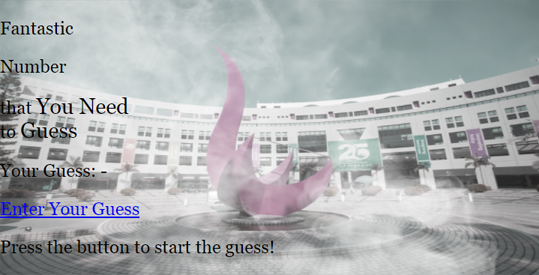
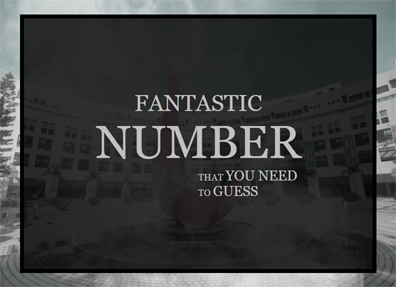
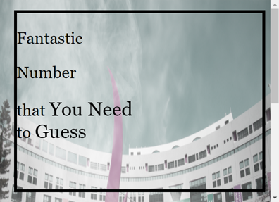
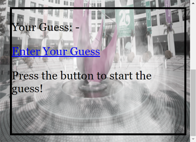
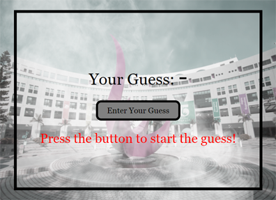

You are given a starting HTML file
here and an image
here
If you load it up, the game will look pretty horrible, like this:

Before you work on the HTML code, let's first understand the two major components in the game display
2. The Title Screen and the Main Screen
There are two 'screens' in the game - the title screen and the main screen
The title screen shows the game title called 'Fantastic Number'
The main screen contains the components that the player needs to play the game
The two screens are put in their corresponding <div>
<!-- the title screen -->
<div class="box" id="title">
...
</div>
<!-- the game screen -->
<div class="box" id="main">
...
</div>
At any time during the game, only one of the screen will be shown in the browser
First, the game shows the title screen and then waits for the player to click anywhere inside the screen
Once the player clicks on the title screen, the title screen will disappear and the main screen will be shown
2.1. Using Appropriate Styles for Both Screens
In the given HTML file, both screens do not have any associated style information;
in fact, the entire HTML file contains only a little bit of CSS style instructions
To work on the screens, you first need to apply appropriate styles to them so that you will see them displayed correctly in the browser
In this part, you will fix the display of the two divs so that they look like a box shown centrally in the game display,
for example, like this:

In this part, you will fix the divs only; the elements inside each screen will be taken care of later
If you look at the HTML code, the two divs already have a class attribute assigned to them
You can make use of this class, called 'box', to apply some common style properties to them
Here are the objectives:
The screens cover roughly 90% of the display area of the browser
The screens are located centrally inside the display
The screens have an appropriate black border around it
The screens have an appropriate font size and the size is automatically adjusted based on the size of the screen
You can certainly and are welcome to use your own understanding of CSS to achieve the above objectives
The main point of the lab is to let you get some practice working on CSS, based on some requirements
Here are some suggestions that you may consider
Making an Appropriate Screen Size
Note that the objective is to make the screen covering roughly 90% of the browser display
Since the size of the browser display may change, you cannot adjust the size using an absolute value
Luckily, there are some CSS display units that you can use, which are relative to the size of browser display
In particular, two useful units that you can use are vw and vh
They are percentage values relative to the size of the viewport, i.e. the display area of the browser
For instance, the following code creates an area covering half the display size in width and 5% in height:
<div style="width: 50vw; height: 5vh"></div>
The div is shown below (with a red background):
You can adjust the size of the browser to see the size effect
You can then easily use the unit to set the screen size correctly
Putting the Screens Centrally
Following up with the above style change, you can put the screens in the middle of the display easily
Since you already know exactly the width and height of the screens, you can use some exact margins so that they will occupy the browser area centrally
Using the red div as an example again, if we use a horizontal margin of 25vw, i.e.:
However, by default, the width and height properties of a box in CSS do not include the size of the border (and padding)
This may be a big problem for layouts that use border heavily with a relative box size
Here is a simple example:
Imagine that you want a div to occupy 100% of the browser display area
To do that, you use 50vw for the width and 25vw for the margin
The total width of the div is then 50vw + 25vw x 2 = 100vw, exactly 100% of the display width
Then, if you add a border, say a 10px thick border, around the div,
the total width is then 50vw + 2 x 10px + 25vw x 2 = 100vw and 20px,
which is slightly bigger than 100%
Because of this, CSS has a property to change the calculation
so that the width and height properties do include the border size and padding
This is done by setting the box-sizing property to border-box
Here are two divs, with the upper one using the default sizing and the lower one uses border-box:
default box sizing
using border-box
Adjusting the Font Properties
Finally, let's make the font bigger inside the screens
You can change the font in various display units
Similar to the screen size, you can use a unit that is relative to the size of the browser display
If you do that, you will see the font changing its size dynamically based on the size of the browser
For example, the text shown below will change its size if you resize your browser:
Magic Text
At this stage, you can set a single size for the font so that both screen appears to have a slightly bigger font
You can adjust the size anytime later on
3. The Title Screen
At this point, your title screen should look something like this:

Scrollbars appear in the browser because the two screens are both showing up in the page
When you hide one of the screens later, each screen should fit just right in the browser display area
In this section, you target to make the title screen to look something like this:
3.1. Using Appropriate Styles for the Title Screen
Similar to the previous section, there is no style properties associated with the title screen
If you want to assign some style rules to the screen, you will need to make use of the id of the div, as shown underlined below:
<!-- the title screen -->
<div class="box" id="title">
...
</div>
To make the title screen, you need to use appropriate styles for the following objectives:
Using a transparent background colour for the screen
Making the text align centrally
Using appropriate font settings for different parts of the screen
All of the above are relatively simple to do; however, you do need to experiment a bit, especially the use of the font size
Using a Transparent Background
There are two ways to make the background transparent:
Using the opacity property
Using a transparent RGB background colour
The difference between them is the opacity property changes everything to transparent, including the text inside the div;
whereas a transparent background colour is effective to the background only
For example, here is a div with a opacity of 0.5:
<div style="background: red; opacity: 0.5"><b>RED</b></div>
The div displays both the background and text with transparency
RED
If you use a transparent RGB colour, which can be achieved by setting the fourth value of colour to anything less than 1,
such as what is done below:
<div style="background: rgba(255, 0, 0, 0.5)"><b>RED</b></div>
The div will show the background with transparency and the text with solid colour
RED
For your title screen, to keep things simple, you can set the opacity to some value smaller than 1
Putting the Text Centrally
It should be very straightforward to do this part
However, note that you may need to change the alignment of the 'subtitle' back to using left justification with a bit of margin to the left
Changing the Font Appropriately
There are different parts of the text in the title screen, as shown by its HTML code:
<p id="title1">Fantastic</p>
<p id="title2">Number</p>
<p id="subtitle">that <big>You Need</big><br>
to <big>Guess</big></p>
Relevant ids have been assigned to the text so that you can adjust their properties individually
You can also change the behaviour of the <big> tag so that the 'bigness' is correctly done
Reminded that the font settings should be adjusted relatively, i.e. try your best to use percentages as style values
Apart from usual font size, margin, padding and colour, one special adjustment to the text is that they have been changed to big letters,
as shown below:
You do not need to type the text again; you only need to use the text-transform property to do that
Here are the various text-transform values that you can apply to a piece of text, 'Text transform':
Using text-transform: capitalize becomes 'Text transform'
Using text-transform: uppercase becomes 'Text transform'
Using text-transform: lowercase becomes 'Text transform'
You just need to pick one from above
4. The Main Screen
After fixing the title screen, your main screen remains unchanged like this:

Similar to what you did for the title screen, you need to make the main screen to look differently, to something such as this:

After practicing your CSS skill using the title screen, this section should be easy for you to do now
4.1. Using Appropriate Style for the Main Screen
Again, an id has been assigned to the main screen, as shown underlined below:
<!-- the main screen -->
<div class="box" id="main">
...
</div>
That means you can apply some style properties to this screen only
The objectives for this screen are:
Using appropriate font settings for different parts of the screen
Making the hyperlink to look like a button
There is no need to repeat what we said before for the first objective
Changing the Hyperlink to Look Like a Button
The HTML of the link is shown below:
<a id="button" href="#">Enter Your Guess</a>
It seems complicated to change a hyperlink to a button; however, it is in fact quite easy to do
The very first thing that you need to do is to use change the <a> tag into a box, i.e. a block element
This can be achieved by using the display property and setting its value to block
Doing this makes any target element to become a block element
Once the hyperlink has become a box, you can use the usual padding, margin and border to adjust the appearance of the hyperlink
4.2. Hiding the Main Screen
The last thing that you need to do for the main screen is to hide it
This is because the game initially shows only the title screen
The main screen will only show up after the player clicks on the title screen
To hide a particular element in an HTML page, the common approach is to set the display property to none
Once you have added the property to the main screen, your HTML should have the title screen solely occupying the browser display area
5. The JavaScript Code
After you finish 'decorating' the game, it is time to write some code to complete the game logic
The starting file gives you a few things to start with:
let answer;
function load() {
...
}
function start() {
...
}
function guess() {
...
return false;
}
Your task is to use the right function at the right moment and fill in the content for the functions
5.1. Making an Answer Using a Random Number
The first thing you have to do is to think of a secret number
You will do that in the load() function
As the name suggests, you run this function when the HTML page loads; therefore, you should run the function at the load event of the <body> tag
To make a random number between 1 to 100, you can use the following code:
parseInt(Math.random() * 100) + 1
The above code uses the random number generator in JavaScript, Math.random(), to make a number in the range [0, 1)
The code then converts the number into our desired range
You will put the secret number into the given global variable answer
5.2. Completing the Click Handler of the Title Screen
At the moment, your game should allow the player to click on the title screen to start the game
You will need to write the code to make that work
Since the player can click on the title screen to start, a click event should be assigned to the entire title screen,
which is the div that you have worked on before, i.e.
<!-- the title screen -->
<div class="box" id="title">
...
</div>
The start() function has been given to you to do that
After clicking on the title screen, your code in the function needs to hide the title screen and show the main screen
Remember that you have used the display property to hide the main screen, this time you will write JavaScript code to change the
property for both screens, to none for the title screen and block for the main screen
To change a style property of an HTML element, you can use the style object
For example, to change the background colour of the title screen to black, you will write this code:
Using similar code, you can easily adjust the display property of the two screens
5.3. Asking the Player for the Guess
In this game, the player can enter his/her guess when he/she clicks on the 'guess button', i.e. the hyperlink on the page
The code will be written inside the guess() function and you need to assign a click event to the hyperlink
However, the way you do that this time is a little bit different from before
You need to write the event like this inside the tag:
<a id="button" href="#" onclick="return guess()">Enter Your Guess</a>
The return in the above code means that you want to cancel the default behaviour of the event by returning false
The guess() function already gives you a return false; at the bottom of the function
so that the page will not jump (the default behaviour) even if you click on the link
Inside the function, you can then use the prompt() function to ask for a guess
Once you store the player's input somewhere, possibly a variable, you can move on to the next section to handle the guess
5.4. Handling the Player Guess
After the player has entered the guess, your game needs to give the player hints about what to do next
You need to check for and show the following hints:
If the player does not enter a number then show "Please enter a number!"
If the player does not enter an integer then show "Please enter an integer!"
If the player does not enter a number within 1 to 100 then show "Please enter an integer between 1 and 100!"
If the player enters a number smaller than the secret number then show "Your number is too small!"
If the player enters a number bigger than the secret number then show "Your number is too big!"
Finally, if the player enters the correct guess then show "You are right!"
To work on the above cases, you can make use of these functions: isNaN(), parseInt(), parseFloat()
The hint will be shown inside the following paragraph:
<p id="hint">Press the button to start the guess!</p>
To change the content of the paragraph, you can use innerHTML of the element, i.e.:
If the player enters a valid guess, i.e. a number between 1 to 100, it will be useful to put the guess somewhere
so that the player knows what was going on
A text span called guess has been given in the HTML so that you can put the player's guess on the page, like this:
6. Finishing the Game
If the player guesses the secret number correctly, the game will be over
In that situation, even if the player clicks on the button again, the game should not ask for a new guess
You can write a few lines of code at the top of the guess() function
so that the function will return if the game is over
Remember that the last player's guess has been put inside the text span called guess,
you can then write the code to compare the secret number and the last player's guess
If they are the same, you immediately skip the rest of the function by returning false
Submission
You do not need to submit the lab. It would be very useful to save a copy of your work, e.g. in a USB or through email.
{kind=link}